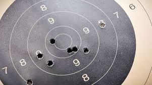
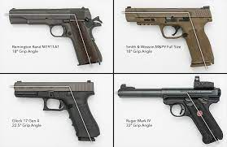

This weapon was the first of many to be created. It was thought to be first made in the 10th century, the
Fire Lance was the first weapon to utilise gunpowder, which was a chemical explosive made when combining nitrates
with sulfur and charcoal. This 'gun' was used like a flamethrower as it did not use bullets at the time, thus being called the Fire Lance.
The first firearm which used gunpowder that shot projectiles was the blunderbuss,
the first gun which inspired many other future guns, such as the double-barrelled
shotgun. The Blunderbuss, translated from Dutch called the thunderbox,
it mainly used buckshot (10-15 balls) in a single shot. This made it used for close range to scatter shot, shooting the balls in a spread pattern.
WWI & WWII
In World War I and II, guns had been standardised at this point to have common traits, which most guns that are being manufactured today
generally follow. Ammunition for guns are now bullets, which encases the gunpowder encased into single for firing many projectiles in a
quick succession, without having to reload. This also applies to the successor of the blunderbuss being the shotgun, where the shotgun projectiles
are stores in shells, instead kept together into a ball, allowing for more ammunition to be carried at once. Weapons are also have generally higher
effective ranges, as the bullets allow the projectiles (the bullet tip) to travel longer distances without losing much of their accuracy. Examples
of such weapons in world war 1 include the M1 Garand and Kar98k, while more modern guns made in the last few decades like the AK-15 and the Dragunov SVDM.
What makes a good gun?
Reliability
Reliability is probably the most important aspect of a gun. Whenever someone needs to use the gun, for whatever reason where it is necessary, it must be able to be used. One of the most important areas of the gun is to make sure that the gun is extremely unlikely to jam, and can also withstand a lot of harsh environments and can still be used. An example of a reliable gun is the infamous "AK-47" which was known to be able to still shoot reliably, even after suffering harsh stress tests on it
Accuracy

In the world of guns, if you point at something and shoot, you are expecting your bullet to land
somewhere where you are aiming at. If the gun your shooting does not even come close to even shooting where you are aiming at, the gun may cause even more harm than good. Accuracy has a similar overlap with a reliability of the gun,
where the gun needs to be able to do its job, and do its job well. Having good accuracy ensures that your margin of error of missing your shot would be reduced massively, allowing the user to feel in more control of the gun. Snipers heavily rely on the guns accuracy, as with its slow-fire rate and long-range capabilities, having an accurate sniper would be all the rage.
Ergonomics

Ergonomics is often an overlook aspect of what can make a gun good. The feel of the gun has great importance for how the user can be able to wield a gun.
Bulky and heavy weapons often have stocks and grips so that people can be able to hold them in place easier.
Weapons that are easier to wield are easier to use, and thus
are better.
Cost-Effectiveness
Finally, one of the most important aspects, especially when wanting to own a gun, is to find out how expensive it is to own. Buying a weapon that requires you to spend a lot of money just to use it on a few occasions is unwise and unadvisable.
In order to find out what weapon is the most cost-effective is how expensive the gun is, how expensive the ammunition it uses, the maintenance it requires, etc.
Ultimately, if the weapon takes too much money just to use it, it is not worth it
and is inherently a bad gun..